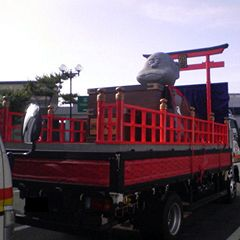

トイレに行くために
ＰＡに立ち寄ると
なぜか、そこに
鎮座されていた。
これも、また
烏枢沙摩（うすさま）
明王のお導きなのか。
後部座席の人間が
突然、喋り出す。
「ダンターンノ
ハァ、まだじゃろー」
「え？えぇ、まあ
そうそう、なんか、
まだみたいですねぇ」
曖昧な発音で
認識が難しい。
恐らく、正解は、
”downtown
（繁華街）
の浜田じゃろう”
なのだろう。
よく知らないが
テレビに出ている
俳優さんらしい。
「浜田大明神」
と書いてある。
でも、どう見ても
地蔵菩薩・・・。
怪しすぎる・・・。
東のかなたの
京（みやこ）という
別世界より
来訪する異人。
道は異界と
つながっている。